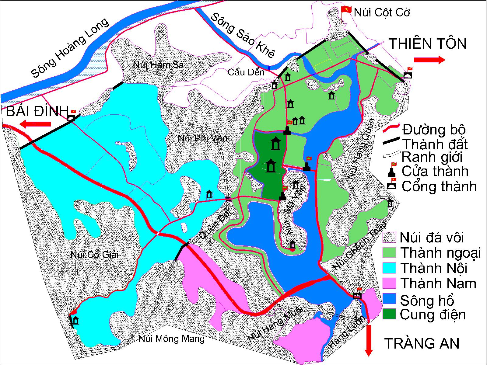
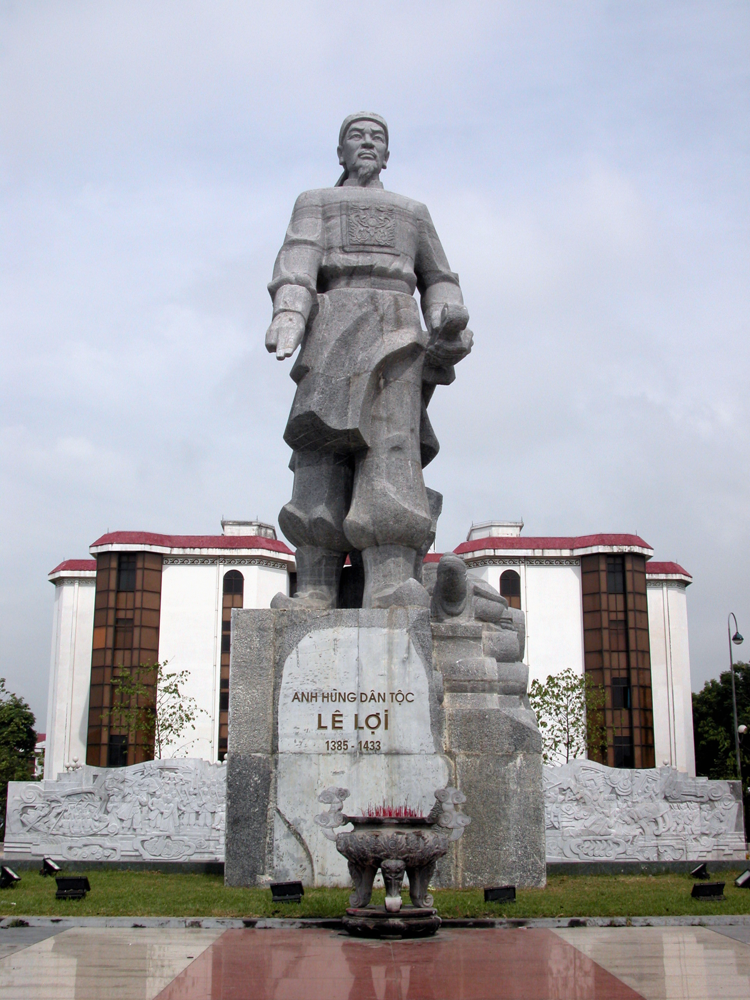

Bảo tà ng lịch sỠ· 20 trang
Việt Nammột dòng chảy
Bốn nghìn năm Ä‘i qua những bá» sông, những kinh đô và những con ngÆ°á»i đã đứng lên khi đất nÆ°á»›c cần nhất.
Trống đồng Äông SÆ¡n — biểu tượng của văn minh Văn Lang
SỬ
↠→ di chuyển · F toà n mà n hình · O tổng quan · S ngÆ°á»i thuyết trình
Mở đầu: đặt toà n bá»™ bà i nói trong má»™t ẩn dụ — lịch sá» nhÆ° má»™t dòng chảy, không phải má»™t danh sách sá»± kiện. Trống đồng Äông SÆ¡n là váºt chứng sá»›m nhất cho má»™t ná»n văn minh bản địa đã có nhà nÆ°á»›c, luyện kim và tÃn ngưỡng riêng.
Dòng thá»i gian
Bốn nghìn năm trong một trang
MÆ°á»i mốc dÆ°á»›i đây không phải là toà n bá»™ lịch sỠ— đó là những chá»— dòng chảy đổi hÆ°á»›ng.
2879TCN Văn Lang — nhà nước đầu tiên
208TCN Âu Lạc và thà nh Cổ Loa
40 Khởi nghĩa Hai Bà Trưng
938 Bạch Äằng — hết Bắc thuá»™c
1010 Dá»i đô vá» Thăng Long
1288 Bạch Äằng lần thứ ba
1428 Bình Ngô đại cáo
1789 Quang Trung đại phá quân Thanh
1945 Tuyên ngôn Äá»™c láºp
1986 Äổi Má»›i
Dá»±ng nÆ°á»›c Văn Lang, Âu Lạc — là ng xã lúa nÆ°á»›c, trống đồng, tÃn ngưỡng thá» thần Mặt Trá»i.
Giữ nÆ°á»›c HÆ¡n má»™t nghìn năm Bắc thuá»™c và những cuá»™c nổi dáºy liên tiếp già nh lại tá»± chủ.
Tá»± chủ và hiện đại Từ các triá»u đại Ä‘á»™c láºp đến quốc gia hiện đại sau 1945 và công cuá»™c Äổi Má»›i.
Nhấn mạnh ba nhịp: dá»±ng nÆ°á»›c, giữ nÆ°á»›c, và dá»±ng lại đất nÆ°á»›c trong thá»i hiện đại. Các mốc 1288 và 938 Ä‘á»u là Bạch Äằng nhÆ°ng cách nhau 350 năm — cùng má»™t con sông, cùng má»™t cách đánh bằng thủy triá»u.
Thế kỷ VII TCN – 208 TCN
Văn Lang và Âu Lạc
Nhà nÆ°á»›c đầu tiên của ngÆ°á»i Việt hình thà nh trên lÆ°u vá»±c sông Hồng, gắn vá»›i nghá» lúa nÆ°á»›c, trống đồng và tục thá» thần Mặt Trá»i.
Kinh đô Phong Châu (Văn Lang), Cổ Loa (Âu Lạc)
Tổ chức 15 bộ, đứng đầu là Hùng Vương, rồi Thục Phán – An Dương Vương
Di sản Trống đồng Äông SÆ¡n, thà nh Cổ Loa ba vòng xoáy ốc
Kinh tế Lúa nÆ°á»›c, đánh cá, luyện đồng và đúc vÅ© khÃ
Truyá»n thuyết Lạc Long Quân – Âu CÆ¡ và truyện An DÆ°Æ¡ng VÆ°Æ¡ng – Mỵ Châu cho thấy ngÆ°á»i Việt đã ý thức vá» má»™t cá»™i nguồn chung từ rất sá»›m.
Cổ Loa · Äông Anh, Hà Ná»™i
Cổ Loa là bằng chứng khảo cổ cho má»™t xã há»™i đã đủ tổ chức để xây thà nh ba vòng và đúc hà ng vạn mÅ©i tên đồng. Tượng Hùng VÆ°Æ¡ng là tượng hiện đại, không phải chân dung lịch sá».
Năm 40 — khởi nghĩa Hai Bà Trưng
Hai Bà TrÆ°ng và lá»i thá» Mê Linh
TrÆ°ng Trắc và TrÆ°ng Nhị phất cỠở Mê Linh, đánh Ä‘uổi thái thú Tô Äịnh, già nh lại quyá»n tá»± chủ sau hÆ¡n hai thế ká»· bị đô há»™.
Tranh dân gian Äông Hồ · hình tượng háºu thế
“Má»™t xin rá»a sạch nÆ°á»›c thù
Lá»i thá» của Hai Bà TrÆ°ng — theo truyá»n thuyết
Năm 40 Khởi nghĩa thắng lợi, Trưng Trắc lên là m vua, đóng đô ở Mê Linh
Năm 43 Mã Viện Ä‘Ã n áp; hai bà tuẫn tiết tại cá»a sông Hát
Dấu ấn Äá»n Hát Môn, Ä‘á»n Äồng Nhân — nÆ¡i thá» hai bà đến nay
Äiểm cần nói: đây là cuá»™c khởi nghÄ©a do phụ nữ lãnh đạo, và nó thất bại vá» quân sá»± nhÆ°ng thắng vá» biểu tượng — gần 2.000 năm sau vẫn còn Ä‘á»n thá».
Năm 938 — chấm dứt một nghìn năm Bắc thuộc
Bạch Äằng, 938
Ngô Quyá»n đóng cá»c nhá»n dÆ°á»›i lòng sông, lợi dụng thủy triá»u nhá» Ä‘oà n chiến thuyá»n Nam Hán và o bẫy — má»™t tráºn đánh thắng bằng địa hình và thá»i gian.
“Tiá»n Ngô VÆ°Æ¡ng có thể lấy quân má»›i há»p của nÆ°á»›c Việt ta mà đánh tan được trăm vạn quân Hán…â€
Lê Văn HÆ°u — Äại Việt sá» ký toà n thÆ°
Sau chiến thắng, Ngô Quyá»n xÆ°ng vÆ°Æ¡ng, đóng đô ở Cổ Loa — mở ra ká»· nguyên Ä‘á»™c láºp tá»± chủ của ngÆ°á»i Việt.
1000 năm Bắc thuộc chấm dứt
Hoằng Tháo tá» tráºn trên sông Bạch Äằng
Cổ Loa kinh đô của nhà Ngô
Giải thÃch cÆ¡ chế: cá»c gá»— bịt sắt đóng ở cá»a sông, thủy triá»u lên thì che khuất, triá»u xuống thì lá»™ ra. Quân Nam Hán và o lúc triá»u lên, rút ra lúc triá»u xuống nên bị cá»c xuyên thủng.
968 – 1005 — nhà nÆ°á»›c Äại Cồ Việt
Äinh Bá»™ LÄ©nh và Lê Hoà n
Từ loạn 12 sứ quân, Äinh Bá»™ LÄ©nh thống nhất đất nÆ°á»›c và đặt quốc hiệu Äại Cồ Việt. Lê Hoà n tiếp nối, đánh bại quân Tống năm 981.
Tượng thỠ· Hoa Lư
Äinh Bá»™ LÄ©nh
968 – 979 · Äinh Tiên Hoà ng
Dẹp loạn 12 sứ quân, láºp nhà Äinh, đặt quốc hiệu Äại Cồ Việt, niên hiệu Thái Bình — nhà nÆ°á»›c phong kiến táºp quyá»n đầu tiên.

Cố đô Hoa Lư · Ninh Bình
Tượng thỠ· Hoa Lư
Lê Hoà n
980 – 1005 · Lê Äại Hà nh
Lên ngôi khi quân Tống sang xâm lược, đánh bại đạo quân thủy tại Bạch Äằng năm 981 và giữ vững ná»n Ä‘á»™c láºp.
Hoa LÆ° là kinh đô địa thế hiểm trở, phù hợp vá»›i giai Ä‘oạn phòng thủ. Hai vị vua nà y đặt ná»n móng cho má»™t nhà nÆ°á»›c Ä‘á»™c láºp có quân Ä‘á»™i, luáºt pháp và tiá»n tệ riêng.
Năm 1010 — chiếu dá»i đô
Từ Hoa Lư đến Thăng Long
Lý Công Uẩn lên ngôi năm 1009. Mùa thu năm sau, kinh đô rá»i Hoa LÆ° vá» Äại La và được đổi tên thà nh Thăng Long — “rồng bay lênâ€.
1010
“Huống chi thà nh Äại La, kinh đô cÅ© của Cao VÆ°Æ¡ng, ở và o nÆ¡i trung tâm trá»i đất, được thế rồng cuá»™n hổ ngồi…â€
Chiếu dá»i đô — Lý Công Uẩn
1009 Lý Công Uẩn lên ngôi, mở đầu nhà Lý — triá»u đại 216 năm
1010 Dá»i đô vá» Äại La, đổi tên Thăng Long
1070 Dựng Văn Miếu; năm 1076 mở Quốc TỠGiám
Tượng Lý Thái Tổ · hình tượng háºu thế
Chiếu dá»i đô là văn bản chÃnh trị quan trá»ng: nó láºp luáºn bằng lợi Ãch của dân chứ không chỉ bằng mệnh trá»i. Chùa Má»™t Cá»™t (1049) là công trình tiêu biểu của thá»i Lý, cùng vá»›i Văn Miếu và hệ thống đê sông Hồng.
1075 – 1077 — kháng Tống lần thứ hai
Phòng tuyến sông Như Nguyệt
Lý ThÆ°á»ng Kiệt chủ Ä‘á»™ng đánh sang Ung Châu, rồi rút vá» dá»±ng phòng tuyến sông Cầu, chặn đứng đạo quân Tống của Quách Quỳ.
Tượng · Bảo tà ng Lịch sỠQuân sự
Nam quốc sÆ¡n hà — tÆ°Æ¡ng truyá»n
“Nam quốc sơn hà Nam đế cư
1075 Táºp kÃch Ung Châu, Khâm Châu, Liêm Châu — phá thế chuẩn bị của quân Tống
1077 Tráºn NhÆ° Nguyệt; quân Tống chết và bệnh dịch, phải rút lui
Sau đó Chủ động giảng hòa, trả tù binh để giữ hòa bình lâu dà i
Bà i thÆ¡ thần được truyá»n là vang lên trong đêm từ Ä‘á»n thá» trên bá» sông. Giá trị của nó nằm ở ý niệm: đất nÆ°á»›c có chủ quyá»n, và chủ quyá»n ấy không phải do ai ban cho.
1258 · 1285 · 1288 — ba lần kháng Nguyên
Trần HÆ°ng Äạo và Hịch tÆ°á»›ng sÄ©
Quốc công Tiết chế Trần HÆ°ng Äạo chỉ huy ba cuá»™c kháng chiến chống Mông – Nguyên, kết thúc bằng tráºn Bạch Äằng năm 1288.
“Ta thÆ°á»ng tá»›i bữa quên ăn, ná»a đêm vá»— gối; ruá»™t Ä‘au nhÆ° cắt, nÆ°á»›c mắt đầm đìa…â€
Hịch tướng sĩ — Trần Quốc Tuấn
1258 Äông Bá»™ Äầu
1285 ChÆ°Æ¡ng DÆ°Æ¡ng · Hà m Tá»
1288 Bạch Äằng
Kết quả Äại Việt toà n thắng
Ba lần xâm lược của đế chế Mông – Nguyên — thế lá»±c mạnh nhất thế giá»›i Ä‘Æ°Æ¡ng thá»i — Ä‘á»u bị đẩy lùi bằng chiến lược “vÆ°á»n không nhà trốngâ€, thủy chiến và sá»± đồng lòng của cả nÆ°á»›c.
Tượng đồng · Ä‘á»n Kiếp Bạc, Hải DÆ°Æ¡ng
Nhấn và o Ä‘iểm 1288: lại là Bạch Äằng, lại là cá»c gá»— và thủy triá»u. Trần HÆ°ng Äạo không chỉ thắng bằng quân số mà bằng việc chá»n đúng địa Ä‘iểm và đúng thá»i Ä‘iểm.
1418 – 1428 — khởi nghĩa Lam Sơn
Lê Lợi, Nguyễn Trãi và bản cáo bình Ngô
MÆ°á»i năm khởi nghÄ©a từ núi rừng Thanh Hóa, kết thúc bằng chiến thắng Chi Lăng – XÆ°Æ¡ng Giang và má»™t ná»n hòa bình cho Äại Việt.

Lê Lợi · 1385 – 1433
“Việc nhân nghĩa cốt ở yên dân
Bình Ngô đại cáo — 1428
1418 Lê Lợi dựng cỠkhởi nghĩa ở Lam Sơn, Thanh Hóa
1427 Chiến thắng Chi Lăng – XÆ°Æ¡ng Giang, quân Minh rút khá»i Äại Việt
1428 Nguyá»…n Trãi viết Bình Ngô đại cáo thay lá»i Lê Lợi
Bản cáo không chỉ tuyên bố chiến thắng — nó đặt ná»n tảng tÆ° tưởng cho má»™t quốc gia lấy dân là m gốc.
Nguyễn Trãi · 1380 – 1442
Có thể so sánh vá»›i Nam quốc sÆ¡n hà : má»™t bên khẳng định chủ quyá»n, má»™t bên khẳng định tÃnh chÃnh nghÄ©a của cuá»™c chiến. Nguyá»…n Trãi là ngÆ°á»i Ä‘Æ°a tÆ° tưởng nhân nghÄ©a và o văn bản nhà nÆ°á»›c.
Mùa xuân Ká»· Dáºu — 1789
Chá»›p nhoáng Äống Äa
Nguyễn Huệ lên ngôi Hoà ng đế, tiến quân thần tốc từ Phú Xuân ra Bắc, đánh tan 29 vạn quân Thanh chỉ trong và i ngà y Tết.
1789
25/1 Xuất quân từ Phú Xuân
29/1 Tá»›i Tam Äiệp
30/1 Ngá»c Hồi
Mùng 5 Tết Äống Äa
Äối thủ 29 vạn quân Thanh dÆ°á»›i quyá»n Tôn SÄ© Nghị
Cách đánh Hà nh quân thần tốc, đánh và o đúng đêm Tết khi địch mất cảnh giác
Sau chiến thắng Chiếu khuyến nông, mở lại việc há»c, xây dá»±ng đất nÆ°á»›c
Tượng Quang Trung · Bảo tà ng Quang Trung
Äiểm nhấn: tốc Ä‘á»™. Quãng Ä‘Æ°á»ng khoảng 600 km trong và i ngà y, kết hợp vá»›i yếu tố bất ngá» vá» thá»i Ä‘iểm. Chiến thắng Äống Äa trở thà nh biểu tượng của sá»± Ä‘oà n kết và thần tốc.
1802 – 1858 — triá»u Nguyá»…n
Kinh đô Huế và một quốc hiệu
Nguyá»…n Ãnh lên ngôi năm 1802, chá»n Phú Xuân là m kinh đô và xây dá»±ng má»™t nhà nÆ°á»›c Nho giáo táºp quyá»n trên ná»n tảng là ng xã.
1802 Gia Long thống nhất đất nÆ°á»›c, láºp nhà Nguyá»…n, đóng đô ở Phú Xuân
1804 Quốc hiệu Việt Nam; năm 1838 Minh Mạng đổi thà nh Äại Nam
Thể chế Quân chủ táºp quyá»n, bốn bá»™ lá»›n, hệ thống thi HÆ°Æ¡ng – Há»™i – Äình
1858 Pháp nổ súng tại Äà Nẵng, mở đầu cuá»™c xâm lược
Kinh thà nh Huế (1805 – 1832) là quần thể thà nh lÅ©y, cung Ä‘iện và lăng tẩm — di sản thế giá»›i được UNESCO công nháºn năm 1993.
Ngá» Môn · Äại Ná»™i Huế
Câu chuyện của một cái tên
Việt Nam — Äại Nam — Việt Nam
Tên nÆ°á»›c đổi nhiá»u lần dÆ°á»›i triá»u Nguyá»…n. Äến năm 1945, tên Việt Nam trở lại cùng má»™t nhà nÆ°á»›c hiện đại.
Triá»u Nguyá»…n là triá»u đại cuối cùng, và cÅ©ng là giai Ä‘oạn đất nÆ°á»›c mất dần chủ quyá»n. Cần tránh đánh giá má»™t chiá»u: đây vừa là thá»i kỳ hoà n thiện bá»™ máy nhà nÆ°á»›c, vừa là thá»i kỳ bế tắc trÆ°á»›c thách thức từ bên ngoà i.
1858 – 1896 — xâm lược và kháng cự
Mất nÆ°á»›c và những ngá»n cá» Cần VÆ°Æ¡ng
Từ Äà Nẵng 1858 đến Hòa Æ°á»›c 1884, Việt Nam mất chủ quyá»n. Phong trà o Cần VÆ°Æ¡ng bùng lên theo lá»i hịch của vua Hà m Nghi năm 1885.
1858 Pháp nổ súng ở Äà Nẵng
1862 Hòa ước Nhâm Tuất
1884 Hòa ước Patenôtre
1885 Dụ Cần Vương
1896 Phong trà o lắng xuống
Cầu Long Biên (1902) là công trình thá»i thuá»™c địa — biểu tượng của cả khai thác kinh tế lẫn đô thị hóa. Phong trà o Cần VÆ°Æ¡ng đánh dấu sá»± chuyển từ kháng chiến của triá»u đình sang kháng chiến của nhân dân.
Äầu thế ká»· XX — hai con Ä‘Æ°á»ng
Bạo động và Duy tân
Hai nhà chà sÄ© cùng khát vá»ng giải phóng dân tá»™c nhÆ°ng chá»n hai con Ä‘Æ°á»ng khác nhau: vÅ© trang nÆ°Æ¡ng nhá» bên ngoà i, và khai dân trà cải cách xã há»™i.
Phan Bội Châu
1867 – 1940 · Sà o Nam
Chủ trÆ°Æ¡ng bạo Ä‘á»™ng, láºp Duy Tân há»™i (1904) và phong trà o Äông Du (1905), Ä‘Æ°a thanh niên sang Nháºt há»c.
1904 Duy Tân há»™i — tôn CÆ°á»ng Äể là m minh chủ
1905 Äông Du: Ä‘Æ°a du há»c sinh sang Nháºt
1912 Việt Nam Quang phục hội, hoạt động vũ trang
Phan Châu Trinh
1872 – 1926 · Tây Hồ
Chủ trÆ°Æ¡ng Duy tân: khai dân trÃ, chấn dân khÃ, háºu dân sinh; đòi Pháp luáºt và dân quyá»n bằng cải cách.
1906 Gá»i thÆ° “Äầu Pháp chÃnh phủ thư†đòi cải cách
1907 Äông Kinh nghÄ©a thục — trÆ°á»ng há»c kiểu má»›i ở Hà Ná»™i
1925 Diá»…n thuyết đòi dân quyá»n, bị bắt tại Sà i Gòn
Hai con Ä‘Æ°á»ng không loại trừ nhau: Phan Bá»™i Châu đặt vấn Ä‘á» già nh chÃnh quyá»n, Phan Châu Trinh đặt vấn Ä‘á» thay đổi con ngÆ°á»i. Thế hệ 1945 sẽ kế thừa cả hai.
1911 – 1945 — tìm Ä‘Æ°á»ng cứu nÆ°á»›c
Nguyá»…n Ãi Quốc và con Ä‘Æ°á»ng 1945
Ngà y 5 tháng 6 năm 1911, ngÆ°á»i thanh niên Nguyá»…n Tất Thà nh rá»i Bến Nhà Rồng. Ba mÆ°Æ¡i tÆ° năm sau, NgÆ°á»i Ä‘á»c Tuyên ngôn Äá»™c láºp tại Quảng trÆ°á»ng Ba Äình.
Hồ Chà Minh · 1890 – 1969
Bến Nhà Rồng · Sà i Gòn, 1911
1911 Sà i Gòn1917 Pháp1920 Äảng Cá»™ng sản Pháp1930 Hồng Kông1941 Pác Bó1945 Hà Ná»™i
Hà nh trình Ä‘i qua Pháp, Anh, Mỹ, nhiá»u nÆ°á»›c châu Phi và châu à — từ ngÆ°á»i tìm Ä‘Æ°á»ng trở thà nh ngÆ°á»i dẫn Ä‘Æ°á»ng cho cách mạng Việt Nam.
Nhấn và o sá»± kiện 1930: thống nhất các tổ chức cá»™ng sản trong nÆ°á»›c thà nh má»™t đảng duy nhất. Năm 1941, thà nh láºp Việt Minh tại Pác Bó, chuẩn bị cho tổng khởi nghÄ©a.
Tháng 8 năm 1945
Mùa thu già nh chÃnh quyá»n
Chỉ trong hai tuần, chÃnh quyá»n vá» tay nhân dân trên cả nÆ°á»›c. Ngà y 2 tháng 9, bản Tuyên ngôn Äá»™c láºp khai sinh nÆ°á»›c Việt Nam Dân chủ Cá»™ng hòa.
“Tất cả má»i ngÆ°á»i sinh ra Ä‘á»u có quyá»n bình đẳng. Tạo hóa cho há» những quyá»n không ai có thể xâm phạm được…â€
Tuyên ngôn Äá»™c láºp — 2/9/1945
19/8 Hà Ná»™i khởi nghÄ©a thắng lợi, chÃnh quyá»n vá» tay Việt Minh
25/8 Sà i Gòn khởi nghÄ©a; vua Bảo Äại thoái vị ngà y 30/8
2/9 Tuyên ngôn Äá»™c láºp tại Quảng trÆ°á»ng Ba Äình
MÃt tinh · Hà Ná»™i, tháng 8/1945
Thá»i cÆ¡ được chá»n trong khoảng trống quyá»n lá»±c sau khi Nháºt đầu hà ng Äồng Minh — má»™t quyết định mang tÃnh bÆ°á»›c ngoặt.
Từ “khởi nghÄ©a từng phần†ở các địa phÆ°Æ¡ng đến tổng khởi nghÄ©a. Äiểm cần nhấn: đây là lần đầu tiên chÃnh quyá»n thuá»™c vá» nhân dân trên phạm vi cả nÆ°á»›c, không phải má»™t triá»u đại má»›i.
13/3 – 7/5/1954
Äiện Biên Phủ, 56 ngà y đêm
Võ Nguyên Giáp chỉ huy chiến dịch, chuyển từ “đánh nhanh thắng nhanh†sang “đánh chắc tiến chắcâ€, bóp nghẹt táºp Ä‘oà n cứ Ä‘iểm mạnh nhất Äông DÆ°Æ¡ng.
CỠ“Quyết chiến quyết thắng†trên hầm De Castries
56 ngà y đêm chiến dịch
16.000 quân Pháp bị loại khá»i vòng chiến
7/5 táºp Ä‘oà n cứ Ä‘iểm đầu hà ng
Võ Nguyên Giáp · 1911 – 2013
Hiệp định Genève (21/7/1954) kết thúc chiến tranh Äông DÆ°Æ¡ng, lấy vÄ© tuyến 17 là m giá»›i tuyến quân sá»± tạm thá»i.
Quyết định khó nhất của chiến dịch là đổi phÆ°Æ¡ng châm tác chiến ngay trÆ°á»›c giá» nổ súng — đánh đổi thá»i gian để giảm thÆ°Æ¡ng vong. Äây là và dụ kinh Ä‘iển vá» chỉ huy dá»±a trên thá»±c tế chiến trÆ°á»ng.
30/4/1975 — chiến dịch Hồ Chà Minh
Một đất nước, một ngà y
Sau 55 ngà y đêm, chiến dịch Hồ Chà Minh kết thúc tại Dinh Äá»™c Láºp. Non sông thu vá» má»™t mối sau hÆ¡n hai mÆ°Æ¡i năm chia cắt.
30·4
26/3 Huế giải phóng, mở đầu chiến dịch Trị Thiên – Huế
3/4 Äà Nẵng giải phóng; quân Giải phóng tiến và o Nam
30/4 Sà i Gòn giải phóng, chÃnh quyá»n Việt Nam Cá»™ng hòa đầu hà ng
Sà i Gòn · tháng 4/1975
Chiến dịch mang tên Hồ Chà Minh diá»…n ra vá»›i năm cánh quân cùng lúc, kết thúc bằng lệnh đầu hà ng không Ä‘iá»u kiện.
Nhấn và o khoảng thá»i gian: từ 10/3 đến 30/4, chỉ 55 ngà y. Thắng lợi 1975 kết thúc ba mÆ°Æ¡i năm chiến tranh liên tục kể từ 1945.
1986 — Äại há»™i VI
Mở cá»a, và đổi mình
Äại há»™i VI chuyển sang kinh tế thị trÆ°á»ng định hÆ°á»›ng xã há»™i chủ nghÄ©a, thừa nháºn nhiá»u thà nh phần kinh tế và mở Ä‘Æ°á»ng há»™i nháºp.
1986 Äại há»™i VI khởi xÆ°á»›ng Äổi Má»›i: phát triển kinh tế nhiá»u thà nh phần
1995 Bình thÆ°á»ng hóa quan hệ Việt – Mỹ, gia nháºp ASEAN
2007 Việt Nam trở thà nh thà nh viên thứ 150 của WTO
8% tăng trưởng bình quân tháºp niên 1990
150 thà nh viên WTO, năm 2007
2023 dân số vượt 100 triệu
TP. Hồ Chà Minh · nhìn từ Quáºn 2
Äổi Má»›i không phải là từ bá» mục tiêu mà là đổi cách là m. Hệ quả rõ nhất: từ thiếu lÆ°Æ¡ng thá»±c đầu tháºp niên 1980, Việt Nam thà nh nÆ°á»›c xuất khẩu gạo hà ng đầu.
Kết · 20 trang
Dòng chảychưa dừng
Từ trống đồng Äông SÆ¡n đến những đô thị ven biển, lịch sá» Việt Nam là chuá»—i những lần đứng dáºy — và má»—i thế hệ lại viết tiếp má»™t trang.
hÆ¡n 100 triệu ngÆ°á»i
54 dân tộc anh em
3.260 km bỠbiển
HẾT
Lịch sỠViệt Nam — bốn nghìn năm trong một dòng chảy.
Ảnh tÆ° liệu: Wikimedia Commons · tượng và tranh là hình tượng háºu thế
Kết lại bằng câu há»i mở: trang tiếp theo do ngÆ°á»i nghe viết. Có thể má»i khán giả kể má»™t nhân váºt hoặc má»™t sá»± kiện địa phÆ°Æ¡ng mà há» thấy thiếu trong bà i.